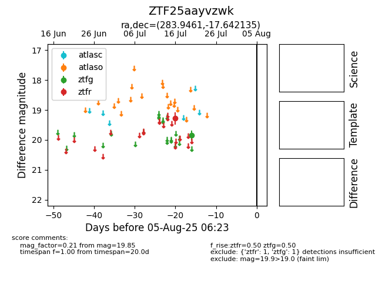

Target ZTF25aayvzwk at 2025-08-05 07:33, see:
FINK: fink-portal.org/ZTF25aayvzwk
Lasair: lasair-ztf.lsst.ac.uk/objects/ZTF25aayvzwk
ALeRCE: alerce.online/object/ZTF25aayvzwk
alt names
ZTF25aayvzwk (ztf,fink)
coordinates:
equatorial (ra, dec) = (283.9461,-17.64213)
galactic (l, b) = (17.5853,-8.87497)
photometry
last ztfg=19.85, ztfr=19.28
1 ztfg, 1 ztfr detections
